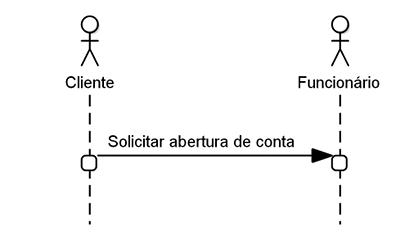
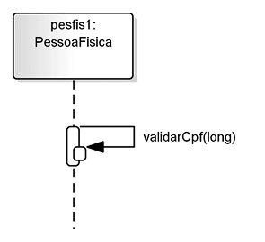
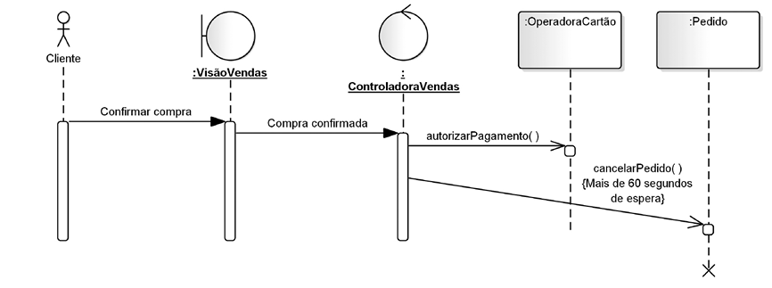
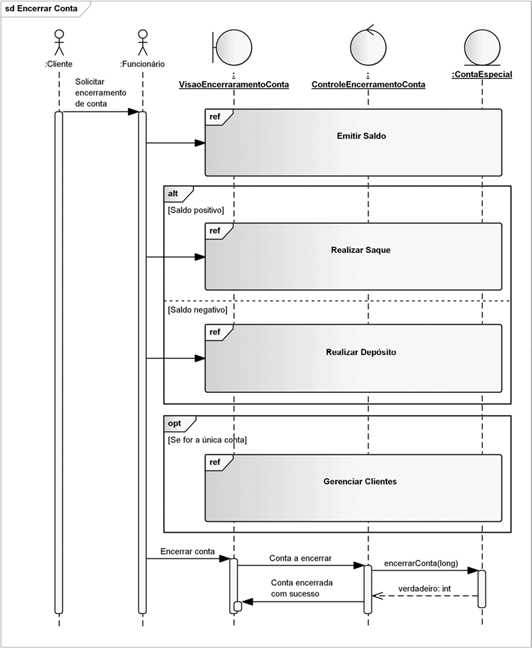
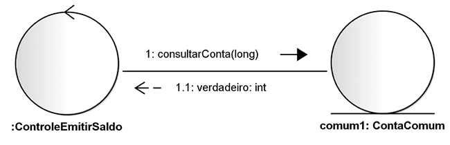
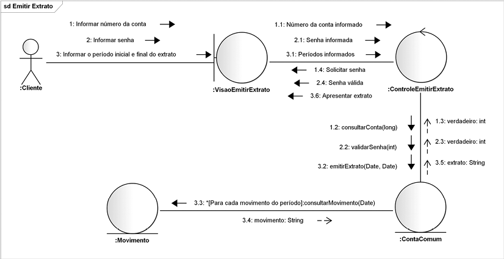
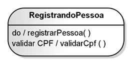
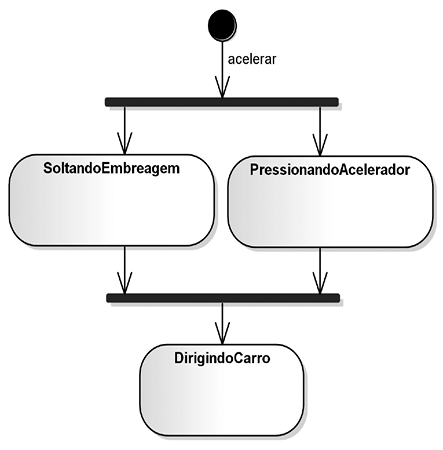
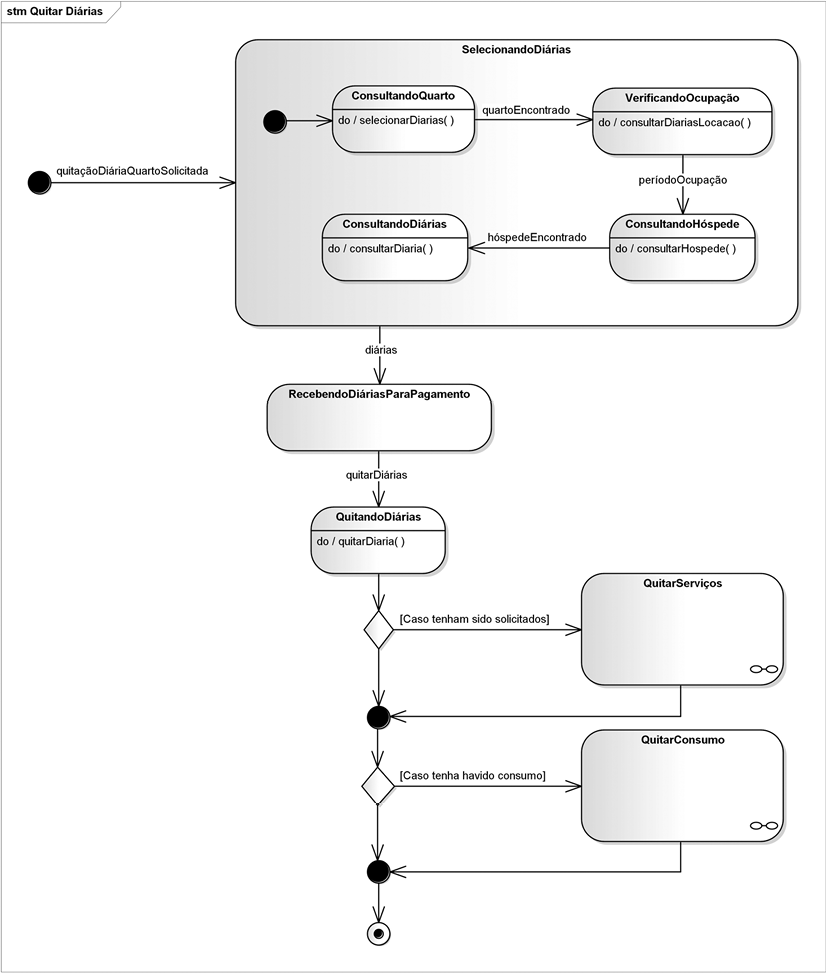

1. Diagrama de Sequência: Ordenação Temporal e Fragmentos Combinados (Cap. 7)
O Diagrama de Sequência é o modelo de interação mais utilizado na indústria de software. Ele mapeia a linha do tempo (de cima para baixo) com linhas de vida (Lifelines), barras de ativação e estímulos entre instâncias:
Mensagens síncronas ($\blacktriangleright$) bloqueiam o remetente até a resposta ($\dashrightarrow$). Mensagens assíncronas ($\rightarrow$) despacham e seguem imediatamente (Fig. 7.3).

Modela ramificações alternativas exclusivas (if-else). Cada compartimento possui sua condição de guarda entre colchetes (Fig. 7.8).

Modela laços de iteração sobre coleções ou listas com condições de parada: loop(min, max)[guarda] (Fig. 7.10).

Sequência completa com validação de senha, verificação de saldo via fragmento alt e emissão de comprovante (Fig. 7.18).

2. Diagrama de Comunicação: Vínculos e Numeração Hierárquica (Cap. 8)
O Diagrama de Comunicação possui equivalência semântica com a Sequência, porém organiza os objetos como nós de uma rede interligados por vínculos estruturais (links). O tempo é governado por numeração decimal aninhada (1, 1.1, 1.2, 1.2.1):
Mensagens trafegam sobre linhas de conexão com setas paralelas indicando remetente e destinatário (Fig. 8.2 e 8.3).

Visão topológica do processo bancário: cliente, interface, controle e entidade de conta bancária (Fig. 8.7).

3. Diagrama de Máquina de Estados: Ciclo de Vida Reativo (Cap. 9)
A Máquina de Estados modela as transições que uma única instância atravessa em resposta a estímulos externos. Segue a fórmula canônica gatilho [guarda] / acao e suporta compartimentos internos:
entry / executa na entrada; do / permanece em execução contínua; exit / executa na saída do estado (Fig. 9.6).

Losango com avaliação dinâmica em tempo de execução: as condições de guarda são testadas ao atingir o nó (Fig. 9.9).

Do cadastro inicial às operações ativas, bloqueios de segurança e encerramento após liquidação de saldo.

4. Script Didático em Python: exemplo_interacao_estados.py
Baixar Código
Implementação em Python com rastreador hierárquico de mensagens (Sequência/Comunicação) e Máquina de Estados Finita completa com atividades entry/exit e validação de guardas:
# Execução e simulação com Python standard library:
python3 exemplo_interacao_estados.py